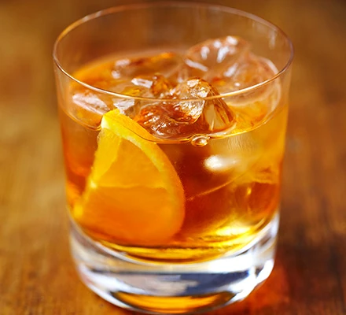

Old Fashioned

Description
The old fashioned is a cocktail made by muddling sugar with bitters and water, adding whiskey, and garnishing with an orange slice or zest and a cocktail cherry. It is traditionally served with ice in an old fashioned glass.
Ingredients
- ice
- 1 tsp granulated sugar
- 1-2 dashes Angostura bitters
- 50ml espresso
- splash of water
- 60ml Scotch whiskey
- soda water optional
- orange slice or peel
- maraschino cherry optional
Steps
- Put the sugar, bitters, and water into a small tumbler. Mix until the sugar dissolves.
- Fill a glass with the ice, before stirring in the whiskey and mix from the tumbler. Add a splash of soda water if desired.
- Garnish with the orange, as well as the cherry if desired. Serve.